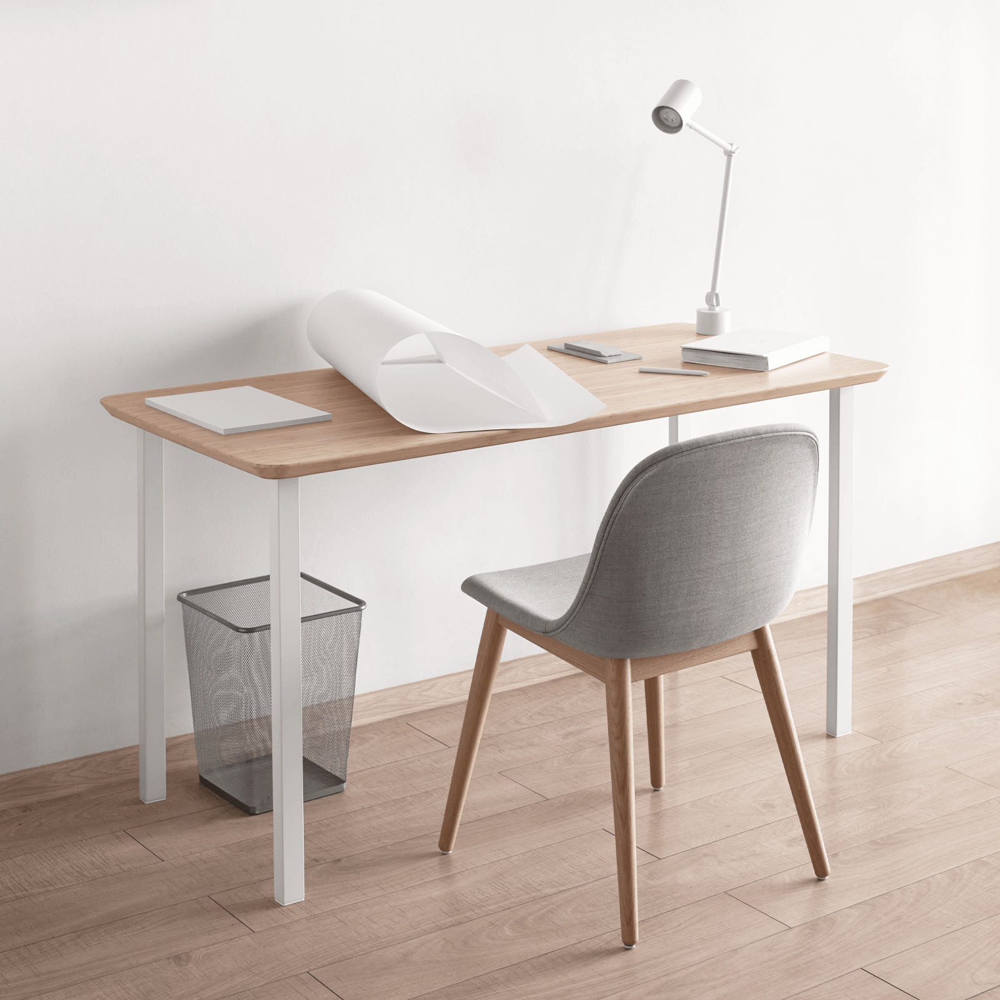

ПРИНЦИП РАБОТЫ
Мы участвуем в проектах от разработки концепции до сдачи объекта в эксплуатацию, иногда руководим процессом строительства в сотрудничестве со строительными компаниями. Такая система дает возможность лучше контролировать процесс реализации объекта и следить за соблюдением авторства. Кроме того, нам удается снизить стоимость и сроки работ за счет налаженного общения между сотрудниками и решения проблем напрямую с заказчиком.

01—ЗАДАЧА
02—ИССЛЕДОВАНИЕ
- 2.1. Обследование и обмеры объекта
- 2.2. Комплексный анализ
- 2.3. Разработка концепции
- 2.1. Работа над каждым проектом начинается с получения точных данных о геометрической конфигурации, привязки к ситуации и инженерному оборудованию.
- 2.2. Мы совместно с заказчиком составляем подробное техническое задание на проектирование, что помогает точно выявить потребности, понять индивидуальные черты и определить возможности. В ходе работы над общественными проектами мы подробно изучаем примеры из локальной и мировой практики, выявляем проблемные места, анализируем недостатки и преимущества конкурентов, рассматриваем ситуацию изнутри.
- 2.3. Мы разрабатываем концепцию в форме функциональных эскизов и схем, коллажей и мудбордов из библиотеки материалов, хранящихся у нас в студии и у поставщиков. Такой подход наглядно демонструет настроение будущего объекта на раннем этапе.
03—ПРОЕКТИРОВАНИЕ
- 3.1. Эскизное проектирование
- 3.2. Рабочее проектирование
- 3.3. Сметное проектирование
- 3.1. На этапе эскизного проектирования мы разрабатываем планировочное решение и выявляем функциональные программы, на основе которых создаем понятное объемно-пространственное решение объекта.
- 3.2. Рабочее проектирование подразумевает под собой разработку документации необходимой для выполнения строительно-монтажных работ. К этому процессу мы стараемся подойти точно и педантично, предусмотреть наибольшее количество возможных нюансов, приблизиться к идеалу настолько, насколько это возможно.
- 3.3. Смежное проектирование в отдельных случаях является неотъемлемой частью проекта и подразумевает под собой разработку инженерно-технических, конструктивных и технологических решений, таких как отопление и вентиляция, кондиционирование и других.
04—КОМПЛЕКТАЦИЯ
- 4.1. Ведомость материалов, бюджет проекта
- 4.2. Смета, график производства работ
- 4.3. Авторский надзор, сопровождение
- 4.1. Для каждого из проектов мы составляем подробную ведомость отделочных материалов и оборудования со сроками поставки и ценами, формируем бюджет проекта, прорабатываем соответствие решений возможностям клиента.
- 4.2. Мы работаем в тесном сотрудничестве со строительными компаниями, что позволяет на раннем этапе оценить затраты на строительно-монтажные работы и сроки выполнения. Мы совместно с подрядчиками составляем график производства работ и на его основе планируем поставки, что позволяет избежать задержек.
- 4.3. Авторский надзор позволяет контролировать соответствие проектных решений их воплощению, оперативно устранять недочеты, возникающие в ходе строительства, корректировать материалы и документы по возникающим в процессе строительства изменениям.